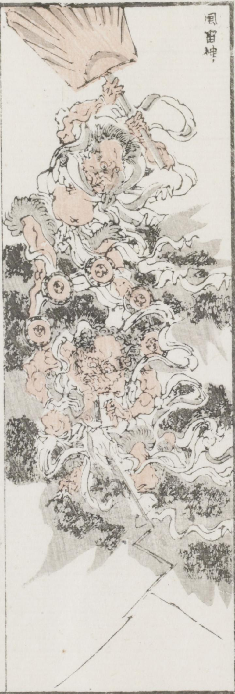

風神；フウジン，雷神；ライジン

風神と雷神。ともに肩衣と裳だけをつけた姿に描かれている。後ろに立つ風神は大きな団扇を振り上げている。前に立つ雷神は、輪にめぐらせた小太鼓を背負い、右手に持った札のようなものを見ている。雷神からは稲光が出ている。
著作者：牧墨僊／出典：親書誌：U426_nichibunken_0097：滑稽洒落狂画苑；コッケイシャレキョウガエン／日付：2007／資源識別子：U426_nichibunken_0097_0019_0000
Copyright (c)2010- International Research Center for Japanese Studies, Kyoto, Japan. All rights reserved.